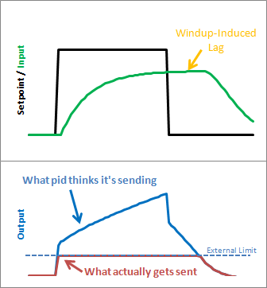
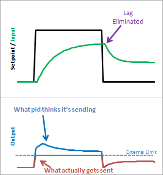
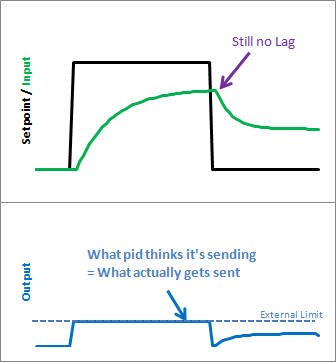

(This is Modification #4 in a larger series on writing a solid PID algorithm)
The Problem

Reset windup is a trap that probably claims more beginners than any other. It occurs when the PID thinks it can do something that it can’t. For example, the PWM output on an Arduino accepts values from 0-255. By default the PID doesn’t know this. If it thinks that 300-400-500 will work, it’s going to try those values expecting to get what it needs. Since in reality the value is clamped at 255 it’s just going to keep trying higher and higher numbers without getting anywhere.
{kind=link}
The problem reveals itself in the form of weird lags. Above we can see that the output gets “wound up” WAY above the external limit. When the setpoint is dropped the output has to wind down before getting below that 255-line.
The Solution – Step 1

There are several ways that windup can be mitigated, but the one that I chose was as follows: tell the PID what the output limits are. In the code below you’ll see there’s now a SetOuputLimits function. Once either limit is reached, the pid stops summing (integrating.) It knows there’s nothing to be done; Since the output doesn’t wind-up, we get an immediate response when the setpoint drops into a range where we can do something.
{kind=link}
The Solution – Step 2
Notice in the graph above though, that while we got rid that windup lag, we’re not all the way there. There’s still a difference between what the pid thinks it’s sending, and what’s being sent. Why? the Proportional Term and (to a lesser extent) the Derivative Term.
Even though the Integral Term has been safely clamped, P and D are still adding their two cents, yielding a result higher than the output limit. To my mind this is unacceptable. If the user calls a function called “SetOutputLimits” they’ve got to assume that that means “the output will stay within these values.” So for Step 2, we make that a valid assumption. In addition to clamping the I-Term, we clamp the Output value so that it stays where we’d expect it.
(Note: You might ask why we need to clamp both. If we’re going to do the output anyway, why clamp the Integral separately? If all we did was clamp the output, the Integral term would go back to growing and growing. Though the output would look nice during the step up, we’d see that telltale lag on the step down.)
The Code
1 2 3 4 5 6 7 8 9 10 11 12 13 14 15 16 17 18 19 20 21 22 23 24 25 26 27 28 29 30 31 32 33 34 35 36 37 38 39 40 41 42 43 44 45 46 47 48 49 50 51 52 53 54 55 56 57 58 59 60 61 62 63 | /*working variables*/unsigned long lastTime;double Input, Output, Setpoint;double ITerm, lastInput;double kp, ki, kd;int SampleTime = 1000; //1 secdouble outMin, outMax;void Compute(){ unsigned long now = millis(); int timeChange = (now - lastTime); if(timeChange>=SampleTime) { /*Compute all the working error variables*/ double error = Setpoint - Input; ITerm+= (ki * error); if(ITerm> outMax) ITerm= outMax; else if(ITerm< outMin) ITerm= outMin; double dInput = (Input - lastInput); /*Compute PID Output*/ Output = kp * error + ITerm- kd * dInput; if(Output > outMax) Output = outMax; else if(Output < outMin) Output = outMin; /*Remember some variables for next time*/ lastInput = Input; lastTime = now; }}void SetTunings(double Kp, double Ki, double Kd){ double SampleTimeInSec = ((double)SampleTime)/1000; kp = Kp; ki = Ki * SampleTimeInSec; kd = Kd / SampleTimeInSec;}void SetSampleTime(int NewSampleTime){ if (NewSampleTime > 0) { double ratio = (double)NewSampleTime / (double)SampleTime; ki *= ratio; kd /= ratio; SampleTime = (unsigned long)NewSampleTime; }}void SetOutputLimits(double Min, double Max){ if(Min > Max) return; outMin = Min; outMax = Max; if(Output > outMax) Output = outMax; else if(Output < outMin) Output = outMin; if(ITerm> outMax) ITerm= outMax; else if(ITerm< outMin) ITerm= outMin;} |
A new function was added to allow the user to specify the output limits [lines 52-63]. And these limits are used to clamp both the I-Term [17-18] and the Output [23-24]
The Result

As we can see, windup is eliminated. in addition, the output stays where we want it to. this means there’s no need for external clamping of the output. if you want it to range from 23 to 167, you can set those as the Output Limits.
Next >>

{kind=link}

Tags: Arduino, Beginner's PID, PID
Thank you for your great explanation! What do you think of my suggestion?
Instead of separately clamping the Iterm, you could limit the Iterm a bit sooner. When the output is bigger than max, there is no point in increasing the Iterm.
if(Output > outMax)
{
// Anti wind-up: undo integration if output>max
ITerm -= ki * error;
// Clamp output
Output = outMax;
}
You could use a temporary variable for ‘ki * error’ to re-use the previous multiplication.
That’s certainly something you could do. I chose not to go that route because if the output is slammed around by the P and D terms it’s possible that it would incorrectly affect how the I term sums.
Another similar trick is to clamp the integral AFTER the output has been computed but before it is clamped. so the math looks something like:
…
iTerm += ki * error;
…
output = pTerm + iTerm + dTerm;
if (output > maxLimit)
iTerm -= output – maxLimit;
output = maxLimit;
else if (output < minLimit)
iTerm += minLimit – output;
output = minLimit;
…
The difference is subtle but reduces the windup to zero instead of the really small error that still exists with clamping the iTerm to the limit instead of clamping the output to the limit.
doh! formatting got removed. should look like (underscore -> tab/space):
if (output > maxLimit) {
____iTerm -= output – maxLimit;
____output = maxLimit;
} else if (output < minLimit) {
____iTerm += minLimit – output;
____output = minLimit;
}
Will, excellent trick! I think the next update to the library will be using this method
Really great post. I’ve been interested in PIDs since I learned about them in an introductory control systems course. Our final project was making a PID very similar to your “beginner’s PID” on a PIC. Now, I’m thinking about using PID for an arduino project and I’m glad I’ve read this, since your code solves three problems I might not have known I had. I’ll use this info if I ever get around to my project idea.
@Evan remember that there’s actually a pid library for the arduino, so most of the hard work is already done there. it’d be a shame for you to do it all from scratch, unless it’s something you intentionally want to do
Hi guys, I am using arduino to design a PI controller to control the flow rate in the system by controlling the pump’s output. Currently, I designed PI controller but it has got a delay in responding and the output is not stable. What do you suggest? I have taken the coded here for the pi controller but it did not work at all. does anybody have an Idea?
@Ali I recommend posting this question to the diy-pid-control google group. that venue has a better setup for Q&A
Wouldn’t the SetOutputLimits function get much smaller if you used the built in constrain(# to constrain, min, max) function within Arduino? Great code btw! Thanks
@dustyn interesting! I was unaware of the constrain function. it may be faster, but I’m guessing that the code inside is probably similar to what I have here. you’re also calling a function which I think will slightly increase ram usage. still, something to try!
I don’t see how your output limiting is working. As far as I can see, there is nothing keeping the proportional output being 100 (or what ever output high limit may be) and at the same time the integral output winding up to 100. But it may be that I don’t get the code right.
Did you consider using the “velocity form” of the equations so you only have to clamp the output. See http://en.wikipedia.org/wiki/Talk:PID_controller#Velocity_Form_Pseudocode